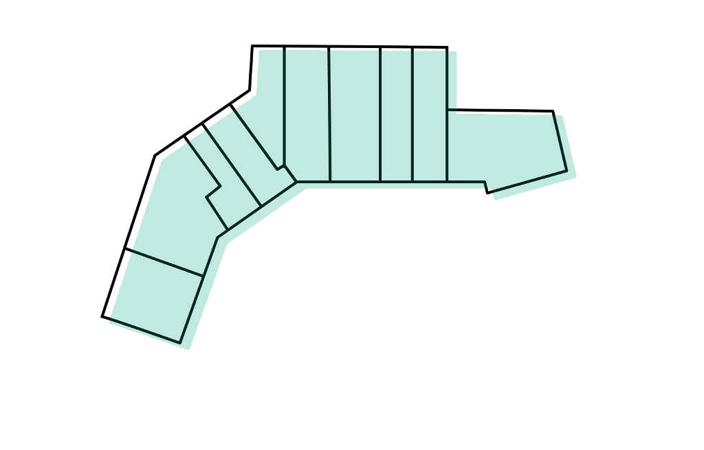

<mat-card class="example-card" fxLayout="row" fxLayoutAlign="center center">
    <mat-card-content >
        <div class="img-container">
            
            <div class="overlay2" matBadge="1" matBadgePosition="before" matBadgeSize="large">
                 </div>
                 
            <div class="overlay3">
                <div style="text-align: justify;font-size: 17px;    font-weight: 700;">Zufahrt über<br>Heerstraße (Aldi/K+K/Edeka)</div>
                <div style="font-size:35px; text-align: justify">
                <mat-icon [inline]="true">directions_bike</mat-icon><mat-icon [inline]="true">directions_car</mat-icon><mat-icon [inline]="true">arrow_forward</mat-icon></div>
                <!-- todo bus stop -->
            </div>
            <div class="overlay">
                <div style="text-align: justify;font-size: 17px;    font-weight: 700;
                ">Zufahrt über<br>Hettinger Straße</div>
                <div style="font-size:35px; text-align: justify">
                <mat-icon [inline]="true">directions_bike</mat-icon><mat-icon [inline]="true">directions_car</mat-icon><mat-icon [inline]="true">arrow_forward</mat-icon></div>
                <!-- todo bus stop -->
            </div>

        </div>
      
    </mat-card-content>
  </mat-card>